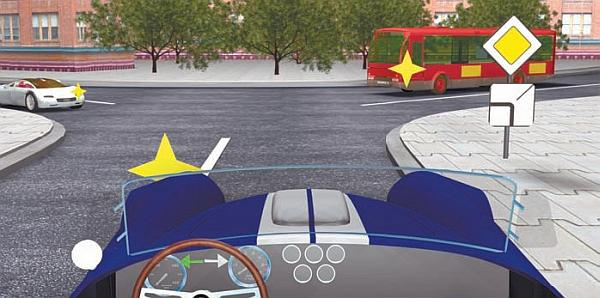
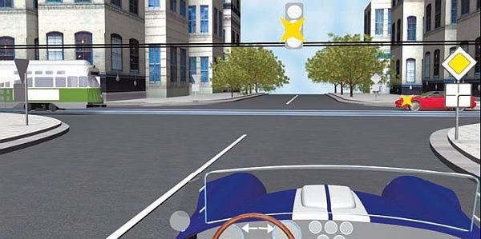
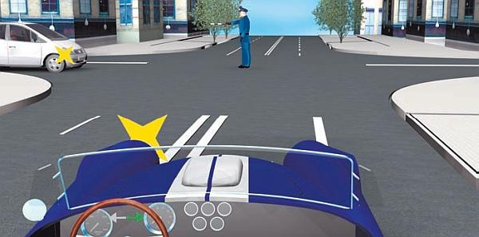
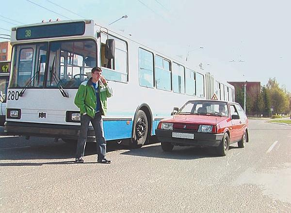

Характерные особенности городской езды.
Чем же характерна езда в городских условиях и почему она считается такой сложной?
Главной особенностью городского дорожного движения является высокая концентрация транспортных средств на относительно небольшом пространстве и постоянно меняющаяся дорожная обстановка. Это требует от водителя не только постоянного внимания, но и умения за очень короткие промежутки времени быстро принимать верные решения. Здесь некогда рассуждать, нужно делать так, чтобы не подвергать опасности себя и других участников дорожного движения (рис. 3.1).

Рис. 3.1. Водитель должен моментально просчитать очередность проезда любого перекрестка
В любом городе всегда много технических средств организации дорожного движения и элементов дорожного оборудования: светофоры, дорожные знаки и дорожная разметка, придорожные столбики, ограждения и т. д. Все это водитель должен не только своевременно замечать (что само собой разумеется), но и быстро анализировать полученную информацию и оперативно на нее реагировать. Причем часто приходится сопоставлять информацию сразу от нескольких средств организации движения и только после этого принимать решение.
Наиболее характерный пример – перекресток, на котором одновременно установлены светофор и знаки приоритета. Если светофор работает, все предельно просто и особых вопросов не возникает. Но если на светофоре постоянно мигает желтый сигнал (рис. 3.2), это означает, что водитель должен при движении через перекресток руководствоваться знаками приоритета (это регламентировано Правилами дорожного движения).

Рис. 3.2. Нерегулируемый перекресток, так как светофор не работает (мигает желтый сигнал)
Получается, водителю нужно заметить светофор с желтым мигающим сигналом, затем сделать вывод о том, что данный перекресток является нерегулируемым, увидеть все знаки приоритета, определить, на какой дороге он находится (на главной или на второстепенной), убедиться в отсутствии помехи справа на равнозначной дороге и учесть еще множество нюансов (наличие трамваев, пешеходов и др.). И все это за очень короткий промежуток времени, причем принятое водителем решение должно быть единственно правильным!
Кстати, многие новички, зная о таких трудностях, приобретают свои первые водительские навыки на загородной дороге, а если такой возможности нет, осуществляют первые городские поездки поздно вечером, рано утром или вообще ночью (когда на дороге количество машин и пешеходов минимально).
На городских дорогах часто можно увидеть регулировщика (рис. 3.3), сигналы которого многие водители успешно забывают сразу после сдачи экзамена в ГИБДД. В результате на перекрестке могут возникать заторы, которые регулировщик вынужден ликвидировать уже не только специальными жестами, но иногда и ненормативной лексикой. Кстати, иногда после перекрестка, на котором работает регулировщик, стоит наряд ГИБДД, безжалостно штрафующий всех водителей, не знающих сигналов регулировщика (между прочим, иногда могут направить и на пересдачу экзамена).

Рис. 3.3. Перекресток, движение на котором регулируется регулировщиком
Еще одна характерная особенность городского движения – большое количество перекрестков. Именно на них происходит большинство дорожно-транспортных происшествий. Причем городской перекресток – это почти всегда большое скопление транспортных средств и пешеходов. И если хотя бы один из участников дорожного движения поступит неправильно, это может привести к серьезной аварии.
Главная опасность прилегающих территорий заключается в том, что оттуда в любой момент может выехать автомобиль, велосипедист, выйти пешеход или выбежать ребенок. Как известно, движущийся на скорости автомобиль мгновенно остановить невозможно, а увидеть с дороги то, что происходит на прилегающей территории (например, во дворе дома), получается далеко не всегда (обзор может быть закрыт зданием, киоском, стоящим у дороги крупногабаритным транспортным средством или иным препятствием).
Особо следует сказать о такой опасности, как остановка общественного транспорта. Всегда нужно помнить, что из-за стоящего автобуса, троллейбуса, трамвая или маршрутного такси в любой момент может выбежать на проезжую часть человек, причем отреагировать на его появление (остановить машину, изменить направление движения) водитель может не успеть (рис. 3.4). К сожалению, многие пешеходы, подвергая себя смертельной опасности, забывают, что обходить стоящий транспорт нужно сзади (напомним, что исключением является трамвай – его как раз нужно обходить только спереди).

Рис. 3.4. Типичная городская ситуация: пешеход неожиданно вышел из-за троллейбуса
Кстати, по этой же причине таит в себе опасность любой транспорт (особенно крупногабаритный), стоящий у бордюра, обочины или края проезжей части, – из-за него в любой момент на проезжую часть может выйти пешеход.
Говоря о городском дорожном движении, необходимо упомянуть такое явление, как автомобильные пробки. К сожалению, они случаются в любом более или менее крупном городе, причем как минимум дважды в сутки: в утренний и вечерний час пик.
Наиболее же востребованные дороги (как правило, центральные городские улицы и проспекты) перегружены автомобилями в течение всего дня. Характерный пример – Москва, где в центре города на некоторых улицах пробки возникают уже в 4 часа утра.